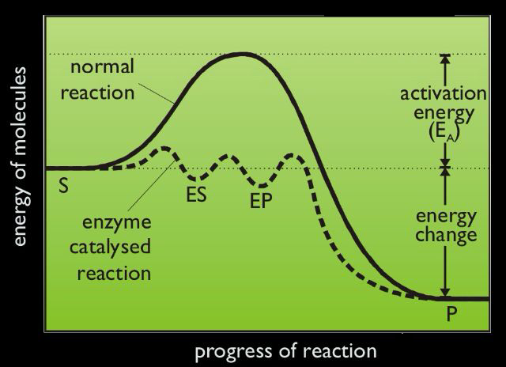
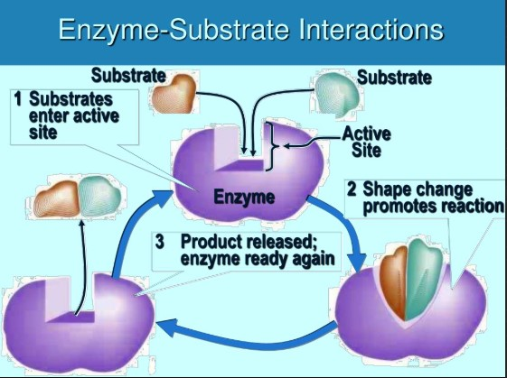
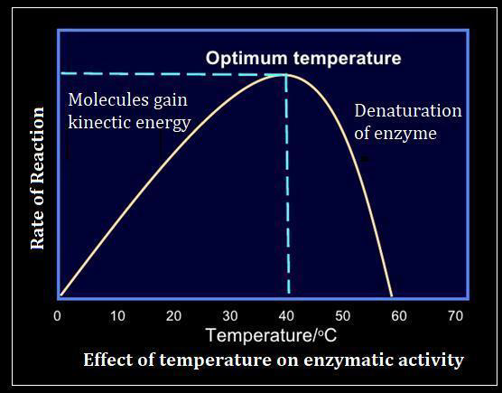
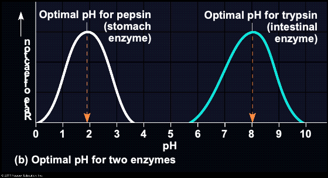

Enzymes are highly specific biological catalysts, mostly proteins, that accelerate biochemical reactions without being consumed in the process.
Fundamental Principles
- Catalysis: Enzymes speed up reactions by lowering the activation energy (Ea), the minimum energy required for a reaction to occur. They do not change the overall energy difference between reactants and products.

- Active Site: A specific 3D region on the enzyme molecule where the reactant, called the substrate, binds. The active site's shape and chemical properties are complementary to its specific substrate.

- Specificity: Enzymes are highly specific; each enzyme typically catalyzes only one or a very limited number of reactions.
- Induced-Fit Model: The active site is not rigid. When the substrate binds, the enzyme undergoes a slight conformational change, molding more tightly around the substrate. This induced fit stresses bonds in the substrate, facilitating the reaction.
- Reusability: After products are released, the enzyme returns to its original state and can catalyze the reaction again.
Factors Affecting Enzyme Activity
Enzyme activity is sensitive to environmental conditions, which can influence the enzyme's three-dimensional structure and thus its ability to bind substrates and catalyze reactions.
- Temperature:
- Low Temperatures: Enzyme activity decreases, but the enzyme is usually not denatured. Reactions slow down due to less kinetic energy.
- Optimum Temperature: The temperature at which an enzyme exhibits maximum activity.
- High Temperatures: Enzyme activity increases initially with rising temperature (due to increased kinetic energy), but beyond the optimum, the enzyme's structure begins to break down, leading to denaturation.

- pH:
- Optimum pH: The specific pH value at which an enzyme is most active. This varies greatly for different enzymes (e.g., pepsin in stomach acid has a low optimum pH, while trypsin in the small intestine has a higher optimum pH).
- Extreme pH: Deviations from the optimum pH (too acidic or too alkaline) can alter the enzyme's ionic state, disrupt its active site conformation, and lead to denaturation.

- Substrate Concentration:
- As substrate concentration increases, the reaction rate generally increases because more active sites are occupied.
- At very high substrate concentrations, the enzyme becomes saturated, meaning all active sites are continuously occupied. At this point, increasing substrate concentration further will not significantly increase the reaction rate; the reaction rate reaches its maximum (Vmax).
- Enzyme Concentration:
- Assuming sufficient substrate is available, increasing the enzyme concentration directly increases the reaction rate. More enzyme molecules mean more available active sites to process the substrate.
Denaturation
- Definition: The irreversible loss of an enzyme's specific three-dimensional structure (especially its active site) due to extreme conditions (e.g., very high temperatures, extreme pH).
- Effect: A denatured enzyme loses its catalytic activity because its active site can no longer bind the substrate effectively.
Written by Kasiban Parthipan